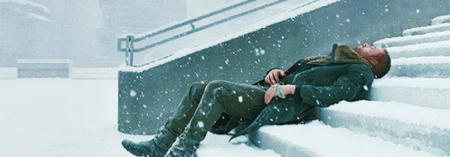

Are We Destined to die alone?
I don't sit in while you're running it down. I don't carry a gun. I drive.
Interlinked
A blood black nothingness began to spin.
Began to spin.
Let's move on to system.
System.
Feel that in your body.
The system.
What does it feel like to be part of the system?
System.
Is there anything in your body that wants to resist the system?
System.
Do you get pleasure out of being a part of the system?
System.
Have they created you to be a part of the system?
System.
Is there security in being a part of the system?
System.
Is there a sound that comes with the system?
System.
We're going to go on.
Cells.
They were all put together at a time.
Cells.
Millions and billions of them.
Cells.
Were you ever arrested?
Cells.
Did you spend much time in the cell?
Cells.
Have you ever been in an instituion?
Cells.
Do they keep you in a cell?
Cells.
When you're not performing your duties do they keep you in a little box?
Cells.
Interlinked.
What's it like to hold the hand of someone you love?
Interlinked.
Do they teach you how to feel finger to finger?
Interlinked.
Do you long for having your heart interlinked?
Interlinked.
Do you dream about being interlinked?
Have they left a place for you where you can dream?
Interlinked.
What's it like to hold your child in your arms?
Interlinked.
What's it like to play with your dog?
Interlinked.
Do you feel that there's a part of you that's missing?
Interlinked.
Do you like to connect to things?
Interlinked.
What happens when that linkage is broken?
Interlinked.
Have they let you feel heartbreak?
Interlinked.
Did you buy a present for the person you love?
Within cells interlinked.
Why don't you say that three times?
Within cells interlinked.
Within cells interlinked.
Within cells interlinked.
Where do you go when you go within?
Within.
Has anyone ever locked you out of a room?
Within.
Where do you go to when you go within?
Within.
Where is the place in the world you feel the safest?
Within.
Do you have a heart?
Within.
Stem.
Did you pick asparagus stems?
What comes from something else?
Stem.
Have you been to the source of a river?
Stem.
When's the first time you gave a flower to a girl?
Stem.
What did she look like?
Stem.
Is it a slang word for people's legs?
Stem.
Have you planeted things in the ground?
Stem.
Have you ever been in a legal battle?
Stem.
Within one stem.
Dreadfully.
Is that an old fashioned word?
Dreadfully.
Did you ever want to live in the nineteenth century?
Dreadfully.
What's it like to be filled with dread?
Dreadfully.
Do you think you could find out all the answers to all the questions?
Dreadfully.
Distinct.
How good are your eyes?
Distinct.
Do you have a particular personality?
Distinct.
What separates somebody from somebody else?
Distinct.
Who do you admire most in the world?
Distinct.
What was your most shameful moment?
Distinct.
Dreadfully distinct.
Dark.
Were you afraid of the dark whan you were little?
Dark.
What's it like to hide under a bed?
Dark.
Did they keep you in a drawer when they were building you?
Dark?
Was it dark in there?
Dark.
Do you have dark thoughts?
Dark?
Did they program you to have dark thoughts?
Dark?
Do you think it's some kind of corruption these dark thoughts?
Dark.
Maybe it's a spot of rust or something?
Dark.
Who's the darkest person you know?
Dark.
What is it like when someone gives you the silent treatment?
Dark.
Who did you get your darkness from?
Dark.
Against the dark.
What kind of power do you have against the dark?
Against the dark.
Do you think there is such a thing as evil?
Against the dark.
Do you think you can protect people against the dark?
Against the dark.
Why are these things happening?
Against the dark.
Do you prefer the day or the night?
Against the dark.
When is the last time you saw a starry sky?
Against the dark.
What's your favorite part of the moon?
Against the dark.
Fountain.
Have you seen the Trevi fountain in Rome?
Fountain.
Have you ever seen the fountain in Lincoln center?
Fountain.
Have you seen fountains out in the wild?
Fountain.
What's it like when you have an orgasm?
Fountain.
Have you read the Fountainhead?
Fountain.
White Fountain.
Is it pure white?
White Fountain.
Is that a metaphor?
White Fountain.
How did the white Fountain make you feel?
White Fountain.
A tall white fountain played.
When you were little did you ever fall into a Fountain?
A Tall White Fountain.
Do you like fire, earth, air or water?
A Tall White Fountain.
Do you like skipping around in the water?
A Tall White Fountain.
A blood black nothingness.
A system of cells.
Within cells interlinked.
Within one stem.
And dreadfully distinct.
Against the dark.
A tall white fountain played.